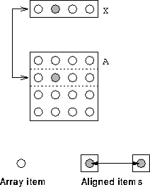

Is is possible to embed an array in a template:
INTEGER :: i= 2
REAL, DIMENSION(4) :: X
REAL, DIMENSION(4,4) :: A
!HPF$ TEMPLATE, DIMENSION(4,4) :: T
!HPF$ ALIGN A(:,:) WITH T(:,:)
!HPF$ ALIGN X(:) WITH T(i,:) ! i used as variable
In this case i is not used as a symbol it needs a value. Since i = 2 the section is aligned with row 2.

For more information, click here